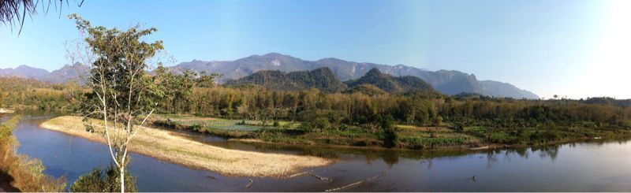

Thu, 10 Feb 2011 16:57:32 · Laos · Elephant · eco-tourism · travel · photography
view over ban noun savath village aka the

View over ‘Ban Noun-savath’ Village, a.k.a. The Elephant Village that lies on the bank of Khan River, near Luang Prabang, Laos.